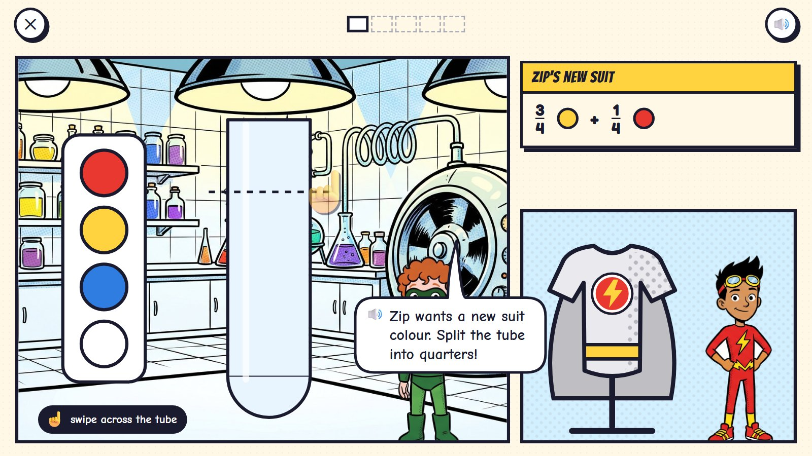
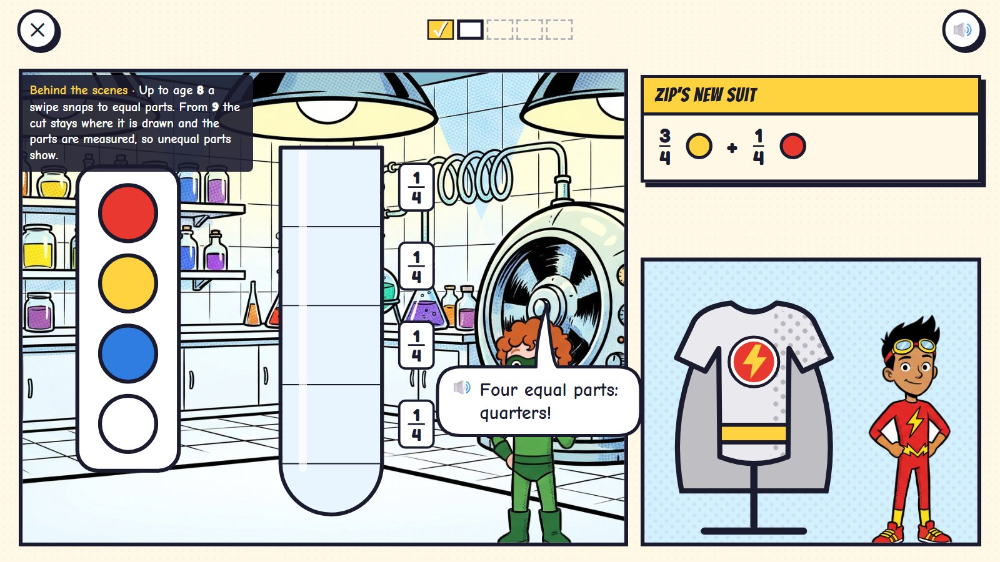
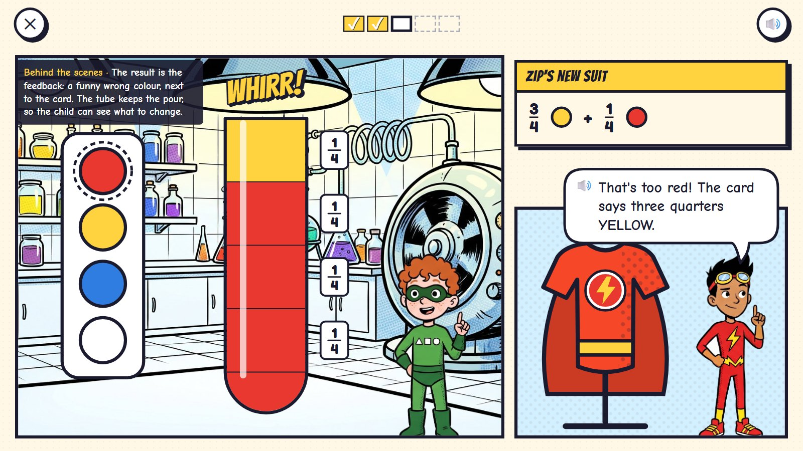
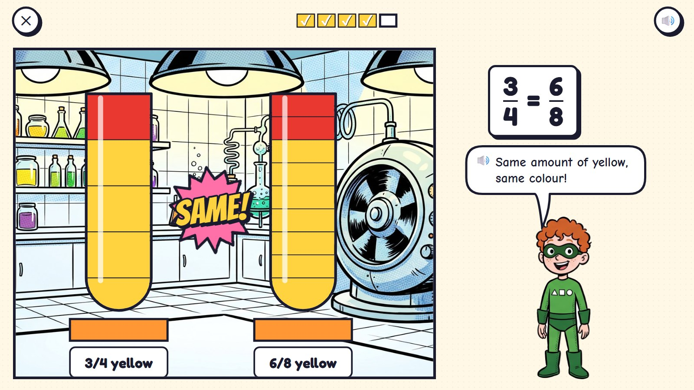
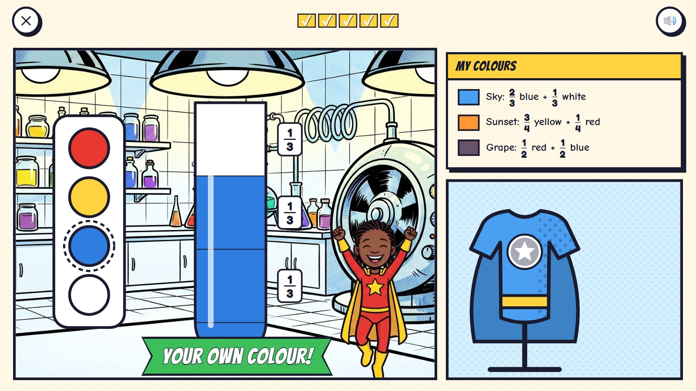

Colour Lab
Every hero's suit colour is a fraction recipe, mixed in the Colour Lab at headquarters. The child swipes cuts across a tall glass tube to split it into equal parts, then pours colours into the parts. The mixer turns the tube into a colour, and the suit on the stand changes to it. Three quarters yellow and one quarter red make sunset orange; a wrong recipe makes a funny colour; and six eighths yellow mixes exactly the same orange as three quarters.
Grades 2–5 · ages 7–10 hero: Poly panel power: swipe cuts across the tube; pour colours into the parts
The maths: Fractions as equal parts of a whole; naming and writing them; comparing; equivalent fractions; adding with the same bottom number. One activity is five rounds, about two minutes. Everything works with one finger or a mouse.
🎉 The fun
The fraction becomes a colour: the suit turns that exact colour, and a wrong recipe gives a funny one next to the order card.
🎥 The view
The lab's panel with the paint pots and the tube; the suit on its stand in the panel beside.
🎆 The finale
The new colour goes on the suit and into the child's own palette, "My colours", for their costume.
Six moments

1Zip's new suit
The order card: 3/4 yellow + 1/4 red. A glass tube in the lab; a dashed line shows where a swipe could cut.
🔊 Zip wants a new suit colour. Split the tube into quarters!
Each hero's suit colour is a fraction recipe; the child mixes it.

2Four equal parts
Three swipes make four equal parts, each labelled 1/4.
🔊 Four equal parts: quarters!
Up to age 8 a swipe snaps to equal parts. From 9 the cut stays where it is drawn and the parts are measured, so unequal parts show.

3A wrong try
Three quarters RED and one quarter yellow: the mixer makes a tomato red, and the suit on the stand turns that colour.
🔊 That's too red! The card says three quarters YELLOW.
The result is the feedback: a funny wrong colour next to the card. The tube keeps the pour, so the child sees what to change.

4Sunset orange
Fixed: 3/4 yellow and 1/4 red. Zip's suit turns sunset orange.
🔊 Sunset orange! My new suit!

5The same colour
Quarters and eighths side by side: 3/4 yellow and 6/8 yellow mix the very same orange.
🔊 Same amount of yellow, same colour!
Equal fractions are seen, not told: the mixer is exact, so equal fractions always give exactly the same colour.

6Your own colour
The child mixes 2/3 blue and 1/3 white: sky blue for their own suit. It joins "My colours".
🔊 Your own colour!
Mock-ups: Gemini's comic pictures (scenes, heroes, things) with the maths drawn by code in the same inked look, the way the app would draw it, so every count, clock and colour is exact.
What is asked, for one age
- Split the tube into quarters
- Zip's suit: 3/4 yellow + 1/4 red
- Echo's cape: 1/2 red + 1/2 blue
- Is 6/8 yellow + 2/8 red the same colour as Zip's?
- Mix your own colour with thirds
One activity card. The same activity serves other ages with other numbers:
| Age | What changes |
|---|---|
| 7 | Halves and quarters; equal and unequal parts; a swipe snaps to equal parts. |
| 8 | Thirds, sixths and eighths; fractions of a whole; which is more paint, a third or a quarter? |
| 9–10 | Cuts stay where they are drawn and are measured; equivalent fractions; adding with the same bottom number (2/8 + 3/8); two tubes for more than a whole. |
Wrong answers we expect, and what happens
| Mistake | Looks like | What happens (never red, never "wrong") |
|---|---|---|
| Unequal parts | from age 9, cuts not evenly spaced | each part shows its size; "Are all four the same?" |
| Colours swapped | 3/4 red for 3/4 yellow | the suit turns the wrong colour beside the order card |
| A quarter is more than a third | thinks the bigger bottom number is more | two tubes side by side: the third holds more paint |
| Unequal parts named as fifths | counts parts, not equal parts | only equal parts get a name: "Make them equal first" |
What it needs
- The colour lab scene
- The tube, the paint pots, the stand and the suit drawn by code (any colour)
- Poly and Zip in their poses
- An exact paint-like mixer (equal fractions give the same colour)
Test robot: Reads the recipe, swipes the right number of equal cuts, pours each part, checks the suit's colour against the mixer, and once swaps the colours to check the tip.
One question
← Back to Comic City · Kitten Rescue · Missing Pieces · Rooftop Hops · Clock Tower · Echo's Copies · Colour Lab · Sticker Pack